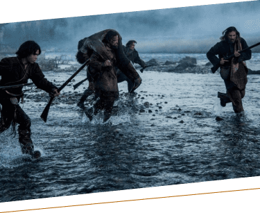
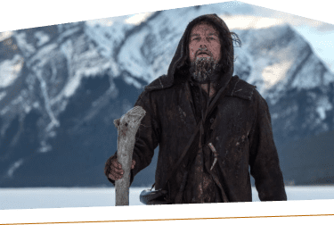
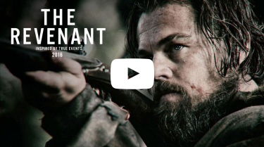

The Revenant
Seul dans le froid, vainqueur d'un périple
Lors d'une expédition en Amérique. Le trappeur Hugh Glass est violemment attaqué par un ours et est gravement blessé. Ralentissant son équipe, il est laissé pour mort. Glass refuse de mourir malgré son état. Il parcourt plus de 300 km seul dans le froid. Il tente de revenir chez lui en bravant tous les obstacles possibles, à travers une lutte héroïque. Et ainsi trouver la rédemption.
La soif de vengeance
Hugh Glass a vu son fils mourir, devant lui, alors qu’il était dans l’incapacité de le défendre. Après une souffrance inimaginable et la trahison de son homme de confiance. Son but, la vengeance. Lors de son périple, Glass est guidé par l’amour de sa femme et la soif de vengeance. Glass veut affronter John Fitzgerald, l’homme qui a tué son fils et qui l’a abandonné comme mort.
La survie, un facteur bouleversant
Le froid, les blessures, la faim, la soif, les hostilités… Ce sont les éléments que Glass subit dans son voyage. Les blessures sont profondes et pourrissent au fur et à mesure. De plus Hugh est touché au niveau des jambes. Il est très handicapé par ses blessures. La température est un élément marquant dans ce film. Les seules sources de chaleurs sont les carcasses animales, le feu et les peaux de bêtes. À un moment de son expédition Glass dort dans le ventre d’un cheval. L’alimentation de Glass est très compliquée, celui-ci va vomir plus d’une fois en se forçant à manger des organes tels que du foie de bison cru ou bien des racines. Outre les facteurs naturels, il y aussi des éléments menaçant Glass. Les animaux, les pawnees, une tribu indienne qui traque les trappeurs et qui défend son territoire.

Le réalisateur et ses objectifs
The Revenant est réalisé par Alejandro González Iñárritu, un mexicain qui connaît un franc succès à Hollywood. L’objectif de Alejandro dans ce film est que le spectateur vit une expérience forte, immersive et viscérale. Il veut que le spectateur s'imprègne des émotions de l’histoire. De plus un énorme travail a été effectué sur la photographie, ce film est perçu comme « l’expérience cinématographique ultime. ». De magnifiques paysages ainsi que des magnifiques angles de vues.
D’autres réalisations
2000 : Amours chienne
2003 : 21 grammes
2006 : Babel
2010 : Biutiful
2014 : Birdman
2016 : The Revenant